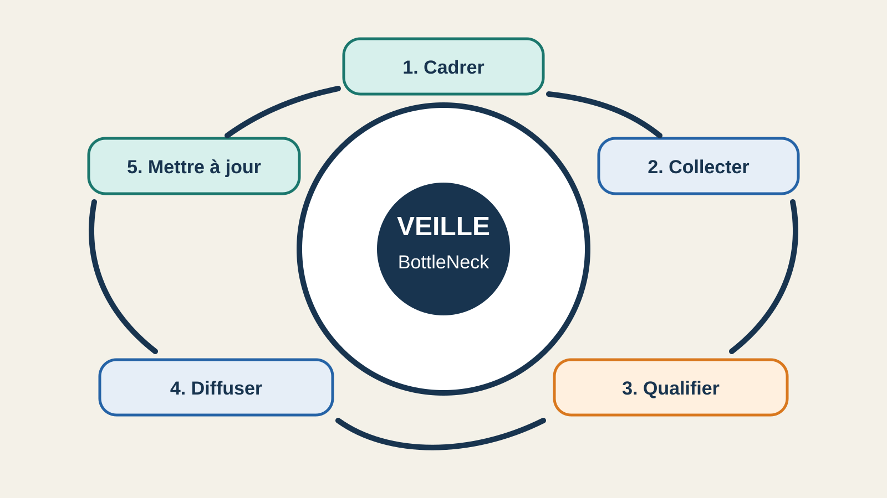

Jointures contrôlées, clés nulles isolées, MAD pour prioriser la revue des prix et restitution statique.Controlled joins, isolated null keys, MAD to prioritize price review and static reporting.
Projet 06 · Mise en place d’un système de veilleProject 06 · Building a monitoring system
Une veille utile parce qu’elle part des décisions à prendre.Monitoring designed around the decisions it needs to support.
J’ai construit un processus de veille pour suivre les méthodes et outils qui influencent la qualité, la validation et la restitution du projet BottleNeck.I built a monitoring process to track the methods and tools that affect data quality, validation and reporting in the BottleNeck project.
- RôleRole
- Conception et curationDesign and curation
- RessourcesResources
- 9 fiches9 records
- ThèmesTopics
- 5 axes5 topics
- DiffusionPublication
- Wakelet publicPublic Wakelet
01 · Contexte01 · Context
Maintenir les choix du projet au-delà d’une analyse ponctuelleMaintain project decisions beyond a one-off analysis
BottleNeck rapproche trois sources et prend des décisions sensibles sur les jointures, la qualité, les prix atypiques et le stock. Les outils et les bonnes pratiques évoluent. Il fallait donc organiser un suivi régulier, sans transformer chaque nouveauté en dépendance.BottleNeck reconciles three sources and makes sensitive decisions about joins, data quality, unusual prices and inventory. Tools and good practices evolve, so the project needed regular monitoring without turning every new option into a dependency.
9ressources qualifiéesqualified resources
5thèmes de veillemonitoring topics
3statuts de qualificationassessment statuses
1collection publiquepublic collection
02 · Cadrage02 · Scoping
Des questions de veille issues des risques réelsMonitoring questions derived from actual risks
Le périmètre vient de l’audit initial et du registre d’améliorations. Cinq axes structurent la recherche : qualité et rapprochement, validation, statistiques robustes, restitution accessible et évolutions possibles du projet.The scope comes from the initial audit and the improvement register. Five topics structure the research: data quality and reconciliation, validation, robust statistics, accessible reporting and possible project developments.
Règle de sélectionSelection rule
Privilégier les organismes publics, les documentations officielles et les publications scientifiques primaires. Une ressource doit éclairer une décision BottleNeck ou une limite identifiée.Prioritize public bodies, official documentation and primary scientific publications. Every resource must inform a BottleNeck decision or an identified limitation.
03 · Processus03 · Process
Un cycle en cinq étapesA five-step cycle
- CadrerScopeRelier chaque thème à un risque, une décision ou une évolution attendue.Link every topic to a risk, a decision or an expected development.
- CollecterCollectRechercher les sources de référence et vérifier leur lien direct.Find authoritative sources and verify their direct links.
- QualifierAssessRésumer l’apport, l’application au projet, la recommandation et la limite.Summarize the contribution, project application, recommended use and limitation.
- DiffuserPublishOrganiser les fiches dans Wakelet selon un ordre de lecture conseillé.Organize the records in Wakelet with a recommended reading order.
- Mettre à jourReviewRéviser la sélection après un changement de données, de schéma, de version ou de besoin.Review the selection after a change in data, schema, version or business need.
04 · Qualification04 · Assessment
Séparer les preuves locales des pistes documentairesSeparate local evidence from documentation-based options
Pandas natif et Pandera ont été testés sur neuf défauts injectés.Native pandas checks and Pandera were tested against nine injected defects.
Great Expectations, boxplot ajusté et validation temporelle restent des options à réévaluer.Great Expectations, adjusted boxplots and time-series validation remain options for later review.
Une source externe explique une méthode. Elle ne prouve pas son efficacité sur les données BottleNeck.An external source explains a method. It does not prove that the method works on BottleNeck data.
05 · Diffusion05 · Publication
Une collection Wakelet lisible et directement exploitableA clear and directly usable Wakelet collection
Les neuf fiches sont réparties dans cinq sections. Les ressources prioritaires couvrent le plan d’amélioration de la qualité, les jointures pandas, la détection robuste des valeurs atypiques et l’accessibilité des graphiques.The nine records are organized into five sections. Priority resources cover the data-quality action plan, pandas joins, robust outlier detection and chart accessibility.
Ouvrir la collection Wakelet →Open the Wakelet collection →

06 · Entretien et limites06 · Review and limitations
Une veille maintenue par les événements du projetMonitoring maintained through project events
- À chaque nouvel export : rejouer les contrôles et comparer les problèmes de qualité.After every new export: rerun the checks and compare data-quality issues.
- À chaque changement de schéma : revoir les cardinalités et les règles métier.After every schema change: review cardinalities and business rules.
- Trimestriellement : contrôler les versions des dépendances et les changements de sémantique.Quarterly: check dependency versions and semantic changes.
- Lorsque le besoin devient récurrent : réévaluer dashboard, orchestration des validations et prévision.When the need becomes recurring: reconsider dashboards, validation orchestration and forecasting.
La collection reste un état daté. Les liens peuvent évoluer et toute recommandation importante doit être testée localement avant d’être annoncée comme une amélioration.The collection remains a dated snapshot. Links may change, and every material recommendation requires local testing before it can be presented as an improvement.